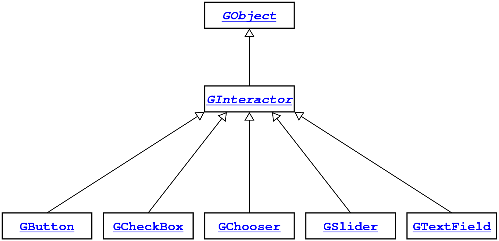

|
The Stanford cslib package
|
This interface exports a hierarchy of graphical interactors similar to
those provided in the Java Swing libraries.
The structure of the GInteractor hierarchy looks like this:

Type detail
typedef GObject GInteractor;
This abstract type is the superclass for all graphical interactors.
In most applications, interactors will be added to a control strip
along one of the sides of the GWindow, but they can
also be placed in specific positions just like any other
GObject.
typedef GInteractor GButton;
This interactor subtype represents an onscreen button. The following
program displays a button that, when pressed, generates the message
“Please do not press this button again”
(with thanks to Douglas Adams’s
Hitchhiker’s
Guide to the Galaxy):
main() {
GWindow gw = newGWindow(600, 400);
GButton button = newGButton("RED");
addToRegion(gw, button, "SOUTH");
while (true) {
GEvent e = waitForEvent(ACTION_EVENT | CLICK_EVENT);
if (getEventType(e) == MOUSE_CLICKED) break;
printf("Please do not press this button again.\n");
}
}
Usage:
cmd = getActionCommand(interactor);
typedef GInteractor GCheckBox;
This interactor subtype represents an onscreen check box. Clicking
once on the check box selects it; clicking again removes the selection.
If a
GCheckBox has an action command, clicking on the box
generates a
GActionEvent.
The display image of a check box is machine-dependent, but the declaration
GCheckBox *traceBox = new GCheckBox("Trace");
typically produces a check box that looks something like this:
Usage:
button = newGButton(label);
typedef GInteractor GSlider;
This interactor subtype represents an onscreen slider. Dragging
the slider control generates an
ActionEvent if the
slider has a nonempty action command.
The display image of a slider is machine-dependent, but the declaration
GSlider *slider = new GSlider();
typically produces a slider that looks something like this:
Usage:
if (isSelected(chkbox)) ...
typedef GInteractor GTextField;
This interactor subtype represents a text field for entering
short text strings. Hitting enter in a text field generates a
GActionEvent if the text field has a nonempty
action command.
Usage:
value = getValue(slider);
typedef GInteractor GChooser;
This interactor subtype represents a selectable list. The
newGChooser function creates an empty chooser.
Once the chooser has been created, clients can use
addItem
to add the options. For example, the following code creates a
GChooser containing the four strings
"Small",
"Medium",
"Large",
and
"X-Large":
GChooser sizeChooser = newGChooser();
addItem(sizeChooser, "Small");
addItem(sizeChooser, "Medium");
addItem(sizeChooser, "Large");
addItem(sizeChooser, "X-Large");
The display image of a GChooser is machine-dependent,
but the chooser generated by this code typically looks something like this:
Usage:
str = getText(field);
Function detail
void setActionCommand(GInteractor interactor, string cmd);
Sets the action command to the indicated string. If the string is not
empty, activating the interactor generates a
GActionEvent.
Usage:
setActionCommand(interactor, cmd);
string getActionCommand(GInteractor interactor);
Returns the action command associated with the interactor.
Usage:
cmd = getActionCommand(interactor);
GButton newGButton(string label);
Creates a
GButton with the specified label. This
function also sets the action command for the button to the
label string.
Usage:
button = newGButton(label);
GCheckBox GCheckBox(string label);
Creates a
GCheckBox with the specified label. In contrast
to the
GButtonructor, this function does not automatically
set an action command.
Usage:
chkbox = new GCheckBox(label);
void setSelected(GCheckBox chkbox, bool state);
Sets the state of the check box.
Usage:
setSelected(chkbox, state);
bool isSelected(GCheckBox chkbox);
Returns
true if the check box is selected.
Usage:
if (isSelected(chkbox)) ...
GSlider GSlider(int min, int max, int value);
Creates a horizontal
GSlider. The parameters are
the minimum value, maximum value, and current value of the slider.
Assigning an action command to the slider causes the slider to
generate an action event whenever the slider value changes.
Usage:
slider = new GSlider(min, max, value);
void setValue(GSlider slider, int value);
Sets the current value of the slider.
Usage:
setValue(slider, value);
int getValue(GSlider slider);
Returns the current value of the slider.
Usage:
value = getValue(slider);
GTextField GTextField(int nChars);
Creates a text field capable of holding
nChars characters.
Assigning an action command to the text field causes it to generate an
action event whenever the user types the ENTER key.
Usage:
field = newGTextField(nChars);
void setText(GTextField field, string str);
Sets the text of the field to the specified string.
Usage:
setText(field, str);
string getText(GTextField field);
Returns the contents of the text field.
Usage:
str = getText(field);
GChooser newGChooser(void);
Creates a chooser that initially contains no items, which are added
using the
addItem function. Assigning an action command
to the chooser causes it to generate an action event whenever the
user selects an item.
Usage:
chooser = newGChooser();
void addItem(GChooser chooser, string item);
Adds a new item consisting of the specified string.
Usage:
addItem(chooser, item);
void setSelectedItem(GChooser chooser, string item);
Sets the chooser so that it shows the specified item. If the item
does not exist in the chooser, no change occurs.
Usage:
setSelectedItem(chooser, item);
string getSelectedItem(GChooser chooser);
Returns the current item selected in the chooser.
Usage:
item = getSelectedItem(chooser);